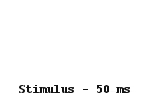

Klasický experiment George Sperlinga ukázal, že část vnímaných informací je k dispozici i po určitou dobu po zmizení fyzického podnětu. Je to důsledek existence tzv. senzorického registru, tedy paměťové komponenty, která úzce souvisí s vnímáním a která udržuje senzorickou informaci přístupnou po krátkou dobu po odeznění skutečné stimulace.
V experimentu mají lidé za úkol sledovat obrazovku, na níž se po velmi krátkou dobu objeví blok písmen, vždy 3 řádky o 4 písmenech. Problesknutí písmen trvá obvykle 50 ms. Za normálních okolností není člověk schopen na vyžádání zopakovat téměř žádná písmena.
Ve Sperlingově experimentu se po zmizení písmen se ozve tón: vysoký, střední nebo nízký, každý odpovídá jinému řádku v bloku. Pokusné osoby mají za úkol zopakovat písmena v příslušném bloku. Zde je úspěšnost až 75 %.
Z experimentu plyne, že senzorická informace je přístupná ještě krátce po odeznění skutečných podnětů. Zvukový signál zazní po zmizení zrakového podnětu, ale vede k tomu, že lidé jsou schopni vyhledat zrakově prezentovanou informaci. Tato schopnost ale velmi rychle mizí, signál prezentovaný s odstupem necelé sekundy je už pozdě.
Citace a zdroje:
Sperling, George (1960). "The information available in brief visual presentations". Psychological Monographs 74: 1–29.
http://cogpsy.info/memory/sensory-memory/